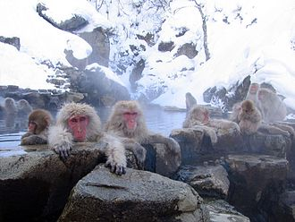
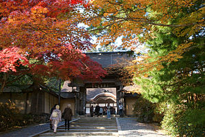

Japan has a total of 6,852 islands extending along the Pacific coast. It is over 3,000 km (1,900 mi) long from the Sea of Okhotsk to the Philippine Sea in the Pacific Ocean.[83] The country, including all of the islands it controls, lies between latitudes 24° and 46°N, and longitudes 122° and 146°E. The five main islands, from north to south, are Hokkaido, Honshu, Shikoku, Kyushu and Okinawa.[15] The Ryukyu Islands, which include Okinawa, are a chain to the south of Kyushu. The Nanpō Islands are south and east of the main islands of Japan. Together they are often known as the Japanese archipelago.[84] As of 2018, Japan's territory is 377,973.89 km2 (145,936.53 sq mi).[9] Japan is the 4th largest island country in the world and the largest island country in East Asia.[85] Japan has the sixth longest coastline in the world (29,751 km (18,486 mi)). It does not have land borders. Due to its many far-flung outlying islands, Japan has the eighth largest Exclusive Economic Zone in the world covering 4,470,000 km2 (1,730,000 sq mi).[86]

The islands of Japan are located in a volcanic zone on the Pacific Ring of Fire. They are primarily the result of large oceanic movements occurring over hundreds of millions of years from the mid-Silurian to the Pleistocene as a result of the subduction of the Philippine Sea Plate beneath the continental Amurian Plate and Okinawa Plate to the south, and subduction of the Pacific Plate under the Okhotsk Plate to the north. The Boso Triple Junction off the coast of Japan is a triple junction where the North American Plate, the Pacific Plate and the Philippine Sea Plate meets. Japan was originally attached to the eastern coast of the Eurasian continent. The subducting plates pulled Japan eastward, opening the Sea of Japan around 15 million years ago.[91]

Japan has 108 active volcanoes. During the twentieth century several new volcanoes emerged, including Shōwa-shinzan on Hokkaido and Myōjin-shō off the Bayonnaise Rocks in the Pacific. Destructive earthquakes, often resulting in tsunami, occur several times each century.[92] The 1923 Tokyo earthquake killed over 140,000 people.[93] More recent major quakes are the 1995 Great Hanshin earthquake and the 2011 Tōhoku earthquake, a 9.1-magnitude[94] quake which hit Japan on March 11, 2011, and triggered a large tsunami.[81] Japan is substantially prone to earthquakes, tsunami and volcanoes due to its location along the Pacific Ring of Fire.[95] It has the 15th highest natural disaster risk as measured in the 2013 World Risk Index.[96]
The climate of Japan is predominantly temperate, but varies greatly from north to south. Japan's geographical features divide it into six principal climatic zones: Hokkaido, Sea of Japan, Central Highland, Seto Inland Sea, Pacific Ocean, and Ryukyu Islands. The northernmost zone, Hokkaido, has a humid continental climate with long, cold winters and very warm to cool summers. Precipitation is not heavy, but the islands usually develop deep snowbanks in the winter
In the Sea of Japan zone on Honshu's west coast, northwest winter winds bring heavy snowfall. In the summer, the region is cooler than the Pacific area, though it sometimes experiences extremely hot temperatures because of the foehn. The Central Highland has a typical inland humid continental climate, with large temperature differences between summer and winter seasons, as well as large diurnal variation; precipitation is light, though winters are usually snowy. The mountains of the Chūgoku and Shikoku regions shelter the Seto Inland Sea from seasonal winds, bringing mild weather year-round.[97]